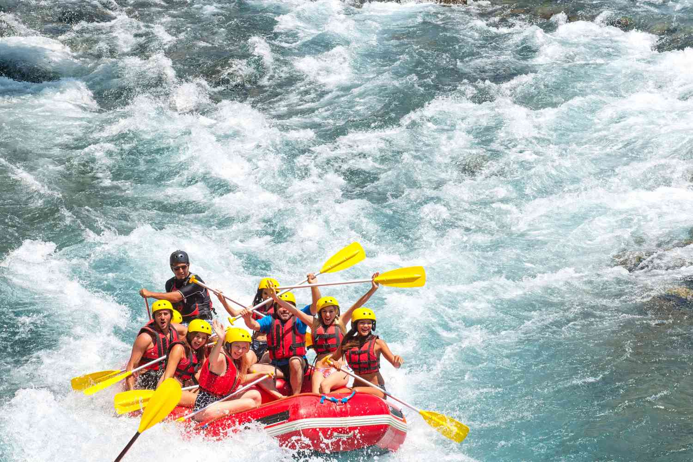

Our moto is to raft like you have never rafted before and enjoy like its your first ever slice of cake.

Dry Oar
History
Dry Oar was founded in 2023 after a lack of wet oars happend after the pandemic. More fun and adventure was calling this company to awaken from the depths of the white water.
Adventure Awaits You!
Image 1

Image 2
Image 3

Image 4
Image 5